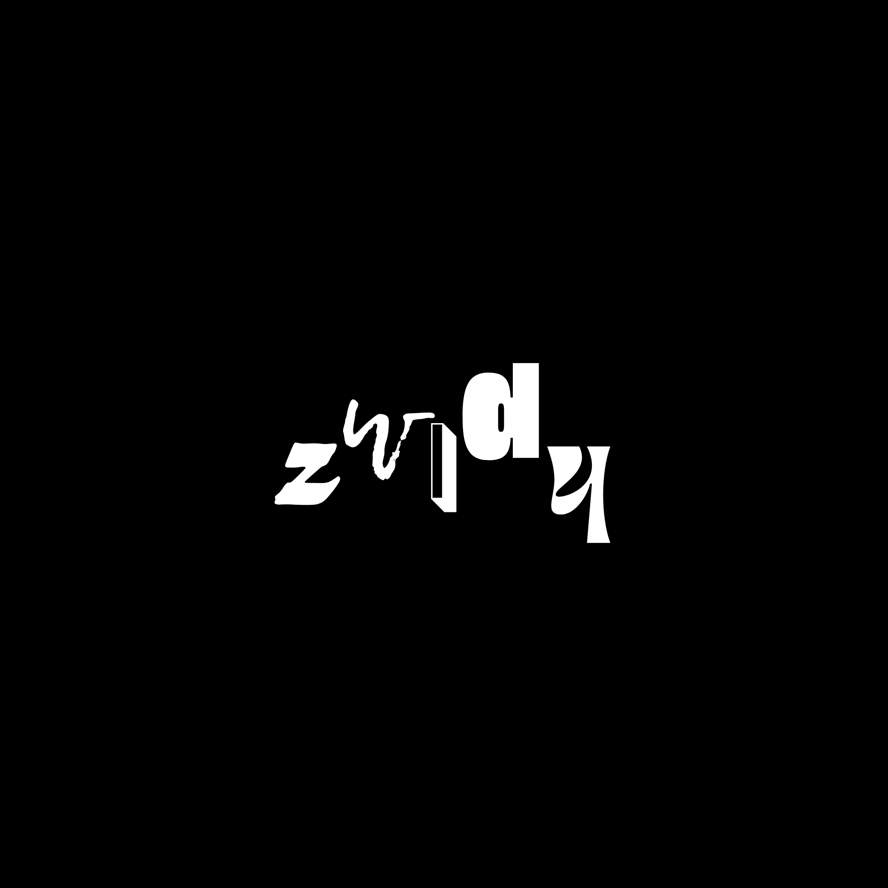

Pięć liter, pięć charakterów.
Porównanie fontów dla logotypu Wizje. Propozycje są bezpłatne do zastosowań komercyjnych i osadzania na stronie. Dobór dotyczy konkretnych liter; zamienniki nie są identycznymi kopiami oryginałów.
Historyczny punkt odniesienia — Zwidy

Poprzedni zestaw
Permanent Marker · Lemon Tuesday · Bungee Shade · Righteous · Rye
Zastosowany zestaw
Knewave · Lemon Tuesday · Bungee Shade · Georgia Italic · Berkshire Swash
Alternatywne „y”
Poprzednia propozycja z cięższym Spicy Rice.
z — Six Hands Black
Knewave daje cięższy, pędzlowy znak. Permanent Marker jest bardziej szkicowy i pozostaje sensowną alternatywą.
w — Lemon Tuesday
Oryginalna czcionka. Potwierdzona zgodność pliku w projekcie z paczką autora; dołączono brakującą licencję OFL.
i — Rig Solid Medium Fill
Przybliżenie efektu przestrzennego. Bungee Shade ma inną budowę i szeryfy; nie odwzorowuje wąskiego znaku z oryginału.
d — Cayento
Anton przybliża ciężar, pionową konstrukcję i wąskie światło oryginalnego „d”. Righteous jest zbyt lekki i geometryczny.
y — Barbra
Spicy Rice przybliża ozdobny, retro charakter; Berkshire Swash to bardziej kaligraficzny kierunek. Żaden nie odtwarza dokładnie charakterystycznego „y” Barbra. Rye ma wyraźnie westernowy charakter.
Źródła, licencje i uwagi o kodzie: dokumentacja fontów. Zestaw Knewave / Lemon Tuesday / Bungee Shade / Georgia Italic / Berkshire Swash jest zastosowany na stronie głównej.